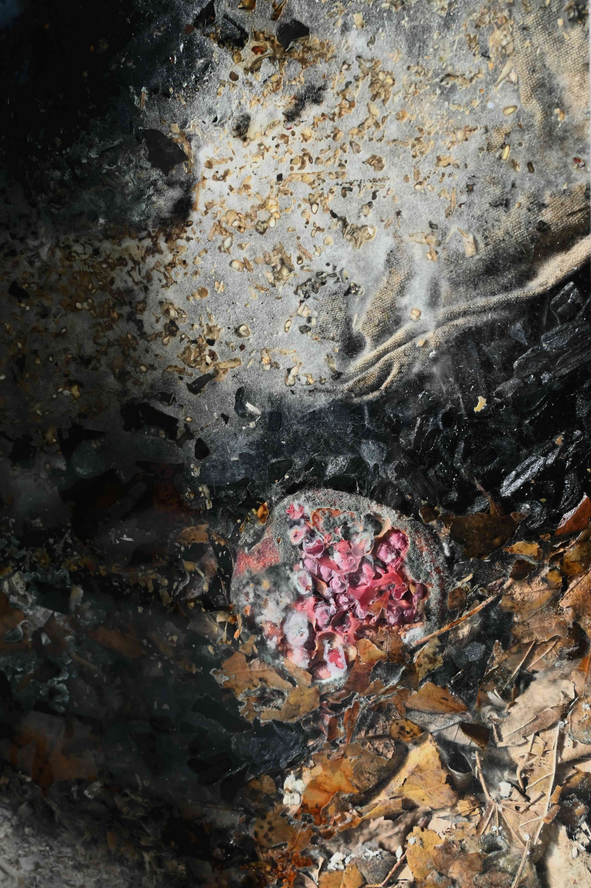

passages, Fondation Grantham pour l'art et l'environnement, 2025.

© photo : Richard-Max Tremblay
FR
Au mur, trois habitats comestibles offerts aux communautés de la décomposition. La consistance des matières épuisées - feuilles séchées, fleurs fanées, fruits, résidus céréaliers, textiles, charbon, ripe de bois - se transforme lentement au fil des semaines, sous l'action des bactéries, champignons et autres êtres infimes. Le climat de chaque vivarium est finement modulé par un système de drainage et d'aération. Au sol, une culture microbienne dormante sur substrat de sucre et de riz.
ENG
On the wall, three edible habitats offered to communities of rot. The state of spent materials — dried leaves, withered flowers, fruits, cereal residues, textiles, charcoal, wood chips — slowly transforms over the course of weeks, metabolized by bacteria, fungi, and other tiny actants. The climate of each vivarium is finely modulated by a system of drainage and aeration. On the floor, a dormant microbial culture on a substrate of sugar and rice.





© photo : Maëlle Bériault (1,3,6) et Antoine Racine (2,4,5,7,8)